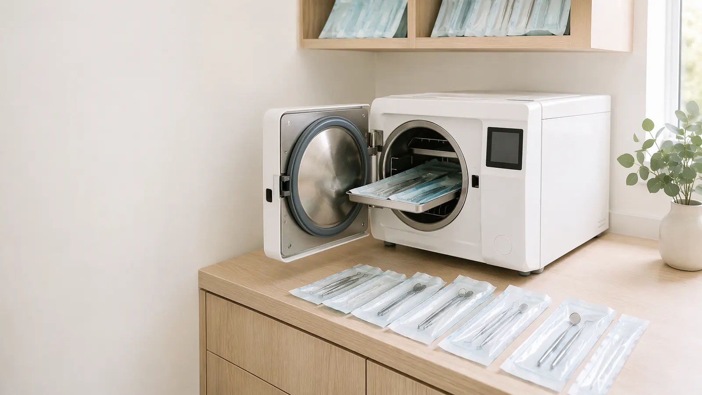
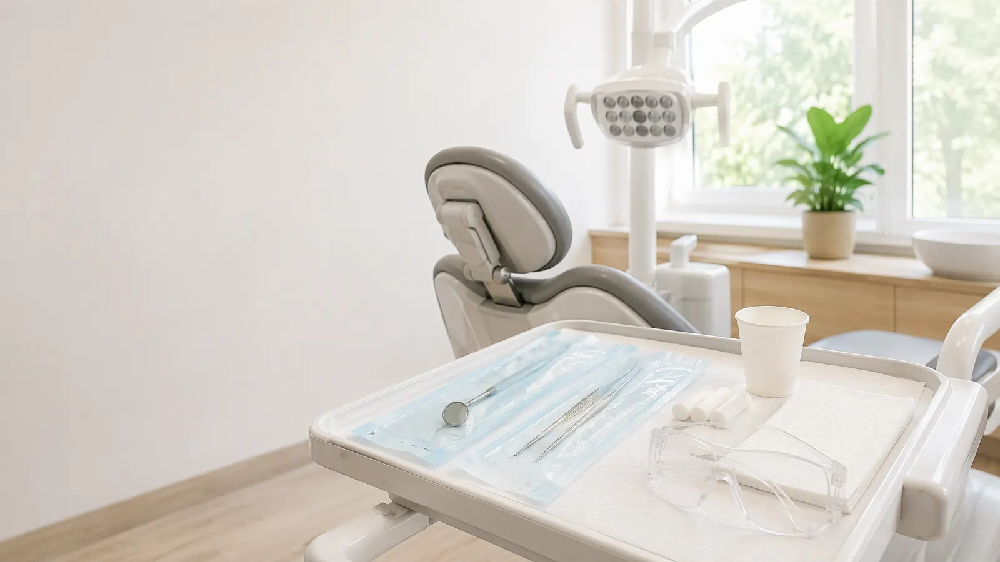

Перед приёмом объясняет план и цену, во время – каждое действие. Вопрос «зачем это» здесь нормальный, а не неудобный.
Врачи
Кто будет лечить
Небольшая клиника: два врача, которых вы видите на фото и с которыми разговариваете до кресла. Никаких «лучших в городе» и выдуманного стажа – только то, что написано в документах.
Показывает снимки и фото зубов, рассказывает варианты решения с ценами до начала. Лечит пациентов от четырнадцати лет.

Чем лечим и как это стерильно
- Инструменты в пакетах, вскрываем при васКаждый набор запечатан после автоклава и открывается уже у кресла
- Одноразовое – на каждый приёмСлюноотсос, салфетки, стаканы, перчатки, маска. После вас – в утилизацию
- Снимок смотрим вместеНа экране, с пояснениями, где что. Снимок остаётся у вас в мессенджере вместе с планом
- План и цена письменноБумага или сообщение: что делаем, в каком порядке, за сколько. Это и есть договорённость

Один врач ведёт от плана до конца
Вы знаете, кто будет лечить, ещё до кресла: врач пишет план, лечит и проверяет результат. Не передаёт «на этап» между кабинетами и не объясняет заново на каждом визите.
- План пишет тот, кто лечитНикаких «сейчас передадим коллеге»: ваш врач знает вашу историю от начала
- Тот же врач на каждом визитеКроме отпусков и больничных – об этом предупреждаем заранее, а не в день приёма
- Финал проверяет тот же врачПрикус, цвет, ощущения – контрольный осмотр у лечащего врача, а не «у кого получилось»
Познакомьтесь вживую
Приходите просто посмотреть
Первый визит – осмотр и разговор: план и цена письменно, лечить начинаем только после вашего решения.